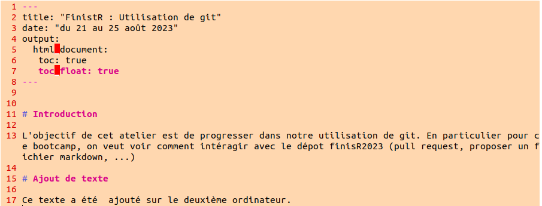

FinistR : Utilisation de git
Introduction
L’objectif de cet atelier est de progresser dans notre utilisation de git. En particulier pour ce bootcamp, on veut voir comment intéragir avec le dépot finisR2023 (pull request, proposer un fichier markdown, …)
Historique
Dans la partie qui suit, on a travaillé avec deux ordinateurs et on a eu des conflits. On va voir comment on les a géré. On va donner les commandes que l’on a exécuté de façon chronologique, avec les deux ordinateurs.
Ordinateur 1
On commence par cloner le dépôt StateOfTheR/finistR2023 :
git clone git@github.com:StateOfTheR/finistR2023.git
On créer une nouvelle branche pour cet atelier git :
git branch Utilisation_de_git
On se déplace sur cette branche :
git checkout Utilisation_de_git
On crée un fichier Rmd dans un nouveau dossier dédié à cet atelier :
mkdir Utilisation_de_git
cd Utilisation_de_git
nvim Utilisation_de_git.RmdOn commit les modification et on les push dans le dépôt.
git add .
git commit -m "création d'une branche pour l'atelier sur git"
git push --set-upstream origin Utilisation_de_git La partie --set-upstream origin Utilisation_de_git de la troisième commande n’est utile que parce que la branche n’existe pas encore dans le dépôt.
A ce stade le fichier Utilisation_de_git.md est comme suit :

Ordinateur 2
Avec le deuxième ordinateur, on a cloné le dépôt, on s’est placé sur la branche de l’atelier git, on a ajouté du texte au fichier Rmd sans modifier le texte déjà présent, puis on a pushé ces modifications sur le dépôt après avoir commité. Le fichier Utilisation_de_git.md est comme suit au moment du push :

Ordinateur 1
En parallèle de cette opération sur le deuxième ordinateur, on a aussi fait un ajout sur le premier ordinateur :

Après avoir fait ces changements, on a fait un git pull et on a eu un conflit auquel on ne s’attendait pas étant donnée que la nature des différences entre le fichier sur le dépôt et le fichier en local :

On pensait pouvoir résoudre le conflit en fast forward, on a configuré le pull de cette façon :
git config pull.ff only
Puis on a fait un git pull. Ca n’a pas fonctionné.
[Manque le message d’erreur]
On a alors utilisé rebase :
git pull --rebase
Puis on a ouvert le fichier md pour gérer les conflits en supprimant les “=” et les “>”, après quoi on a commit ces modifications. On a alors essayé de faire un push et on a eu le message d’erreur suivant :

On a résolu le problème avec :
git rebase --continue
Le push a ensuite bien marché.
Conclusion intermédiaire
On s’est dit que l’on avait pas bien géré le problème, qu’on aurait du configurer le pull de la façon suivante de façon à ce que git gère automatiquement le conflit.
git config pull.rebase false
On a fait ce test et voici les résultats.
1971 21/08/23 17:56:01 git pull –rebase 1972 21/08/23 17:56:01 cd 1973 21/08/23 17:56:01 cd finistR2023/Utilisation_de_git/ 1974 21/08/23 17:56:01 nvim Utilisation_de_git.Rmd 1975 21/08/23 17:56:01 cd .. 1976 21/08/23 17:56:01 git status 1977 21/08/23 17:56:01 git add . 1978 21/08/23 17:56:01 git commit -m “merge conflicts” 1979 21/08/23 17:56:01 git push 1980 21/08/23 17:56:01 git branch 1981 21/08/23 17:56:01 git rebase –continue 1982 21/08/23 17:56:01 git status 1983 21/08/23 17:56:01 git push
Commandes utilisées
Brainstorming
- faire un repo propre, avec des logos, des sections, …
Commandes à suivre
- Créer une nouvelle branche : git branch nom_branche
- Se déplacer sur la nouvelle branche : git checkout nom_branche
- Ajouter le fichier RMD : git add
- Pusher la nouvelle branche : git push –set-upstream origin nom_branche
Test conflit
test
Test conflits encore et encore
Ce coup ci c’est la bonne
#Test conflit v2 pull, push
Test Annaig conflit
test